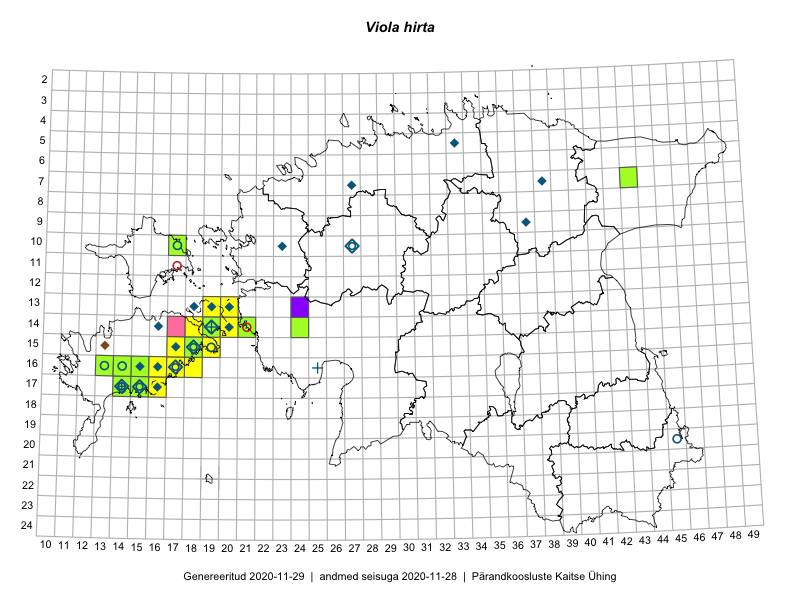

Viola hirta
Uuendatud: 2016-12-07
Kaardile koondatud taksonid: Viola hirta L.

Kaart põhineb 45 vaatlusel. Taime on leitud 16 ruudust.
| Ruut | Vaatleja(d) | Vaatlusaeg | Kirje tüüp | Viide andmebaasikirjele |
|---|---|---|---|---|
| 16-17 | Peedu Saar | 2015-09-07 | ruut/ala | vaata PlutoFis |
| 16-17 | Peedu Saar | 2015-09-07 | punkt | vaata PlutoFis |
| 14-19 | Meeli Mesipuu | 2015-05-09 | ruut/ala | vaata PlutoFis |
| 14-19 | Meeli Mesipuu | 2015-05-09 | punkt | vaata PlutoFis |
| 14-19 | Meeli Mesipuu | 2015-05-09 | punkt | vaata PlutoFis |
| 14-19 | Meeli Mesipuu | 2015-05-09 | punkt | vaata PlutoFis |
| 14-19 | Meeli Mesipuu | 2015-05-09 | punkt | vaata PlutoFis |
| 14-19 | Meeli Mesipuu | 2015-05-09 | punkt | vaata PlutoFis |
| 14-19 | Meeli Mesipuu | 2015-05-09 | punkt | vaata PlutoFis |
| 14-19 | Meeli Mesipuu | 2015-05-10 | punkt | vaata PlutoFis |
| 14-19 | Meeli Mesipuu | 2015-05-10 | punkt | vaata PlutoFis |
| 16-14 | Sirje Azarov, Aira Alasi | 2015-05-01 | ruut/ala | vaata PlutoFis |
| 16-14 | Sirje Azarov, Aira Alasi | 2015-05-01 | punkt | vaata PlutoFis |
| 14-19 | Meeli Mesipuu | 2015-06-20 | punkt | vaata PlutoFis |
| 17-14 | Mari Reitalu, Sirje Azarov | 2015-05-09 | ruut/ala | vaata PlutoFis |
| 14-20 | Meeli Mesipuu, Kadri Tali | 2015-06-26 | ruut/ala | vaata PlutoFis |
| 13-19 | Meeli Mesipuu, Kadri Tali | 2015-06-24 | ruut/ala | vaata PlutoFis |
| 16-13 | Mari Reitalu, Oliver Parrest | 2015-05-22 | ruut/ala | vaata PlutoFis |
| 17-15 | Sirje Azarov, Aira Alasi | 2015-05-05 | ruut/ala | vaata PlutoFis |
| 17-15 | Sirje Azarov, Aira Alasi | 2015-05-10 | punkt | vaata PlutoFis |
| 17-15 | Sirje Azarov, Aira Alasi | 2015-04-26 | ruut/ala | vaata PlutoFis |
| 15-19 | Sirje Azarov, Mari Reitalu | 2015-05-08 | ruut/ala | vaata PlutoFis |
| 15-19 | Sirje Azarov, Mari Reitalu | 2015-05-08 | punkt | vaata PlutoFis |
| 17-14 | Mari Reitalu, Sirje Azarov | 2015-05-09 | punkt | vaata PlutoFis |
| 17-14 | Sirje Azarov, Mari Reitalu | 2015-04-27 | ruut/ala | vaata PlutoFis |
| 17-14 | Sirje Azarov, Mari Reitalu | 2015-05-03 | punkt | vaata PlutoFis |
| 16-13 | Mari Reitalu, Oliver Parrest | 2015-05-22 | punkt | vaata PlutoFis |
| 15-18 | Elle Rajandu, Karin Kikas | 2015-07-24 | punkt | vaata PlutoFis |
| 18-38 | Ülle Jõgar, Illi Tarmu, Kai Rünk | 2015-05-19 | ruut/ala | vaata PlutoFis |
| 16-15 | Meeli Mesipuu | 2016-06-28 | ruut/ala | vaata PlutoFis |
| 17-14 | Toomas Kukk, Meeli Mesipuu, Johannes Kõdar | 2016-08-11 | ruut/ala | vaata PlutoFis |
| 17-16 | Toomas Kukk, Meeli Mesipuu | 2016-08-12 | ruut/ala | vaata PlutoFis |
| 16-18 | Sirje Azarov, Mari Reitalu | 2016-08-10 | punkt | vaata PlutoFis |
| 13-20 | Sirje Azarov, Mari Reitalu | 2016-08-17 | punkt | vaata PlutoFis |
| 13-20 | Mari Reitalu, Sirje Azarov | 2016-08-17 | ruut/ala | vaata PlutoFis |
| 14-18 | Mari Reitalu, Sirje Azarov | 2016-08-09 | ruut/ala | vaata PlutoFis |
| 14-19 | Mari Reitalu, Sirje Azarov | 2016-08-18 | ruut/ala | vaata PlutoFis |
| 15-18 | Mari Reitalu, Hannes Pehlak | 2016-08-26 | ruut/ala | vaata PlutoFis |
| 16-18 | Mari Reitalu, Sirje Azarov | 2016-08-08 | ruut/ala | vaata PlutoFis |
| 15-18 | Mari Reitalu, Hannes Pehlak | 2016-08-26 | punkt | vaata PlutoFis |
| 14-19 | Meeli Mesipuu | 2016-06-29 | ruut/ala | vaata PlutoFis |
| 14-19 | Meeli Mesipuu | 2016-06-29 | punkt | vaata PlutoFis |
| 17-15 | Meeli Mesipuu, Toomas Kukk, Johannes Kõdar | 2016-08-11 | ruut/ala | vaata PlutoFis |
| 17-15 | Meeli Mesipuu, Toomas Kukk, Johannes Kõdar | 2016-08-11 | punkt | vaata PlutoFis |
| 16-15 | Meeli Mesipuu, Virve Sõber | 2012-06-08 | punkt | vaata PlutoFis |